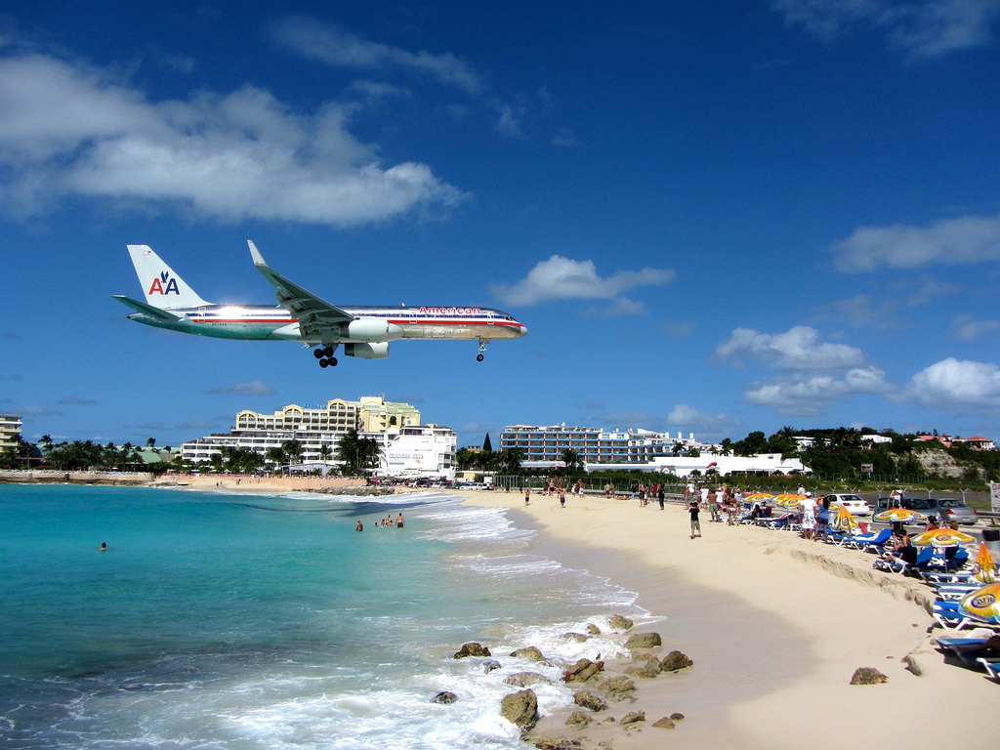
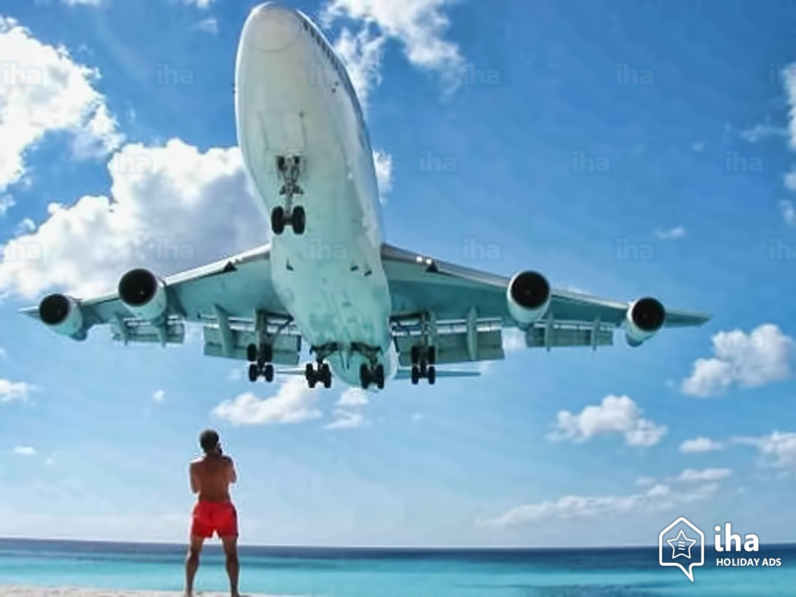
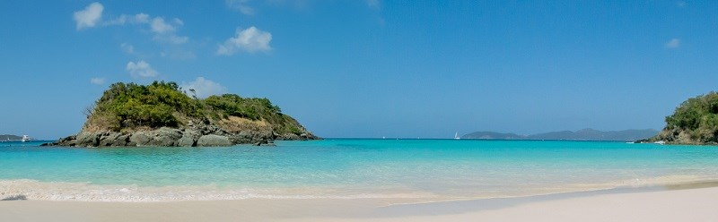

Visit Maho Beach on the beautiful island of St. Maarten!

Maho beach has SO much to offer!
Look Up!
Maho beach is most known for the planes that fly right over the beaches. The sandy white beaches are located at the end of one of the island's airport runways. This allows for beach goers to sit and enjoy their beach day while also enjoying the sight of the airplanes fly yards above their heads.

Vacationers are able to enjoy a beach trip while also experiencing an event of a lifetime.
Other events and scenes Maho beach has to offer:
rocks and caves are great locations for snorkeling
calm seas
great sunsets
white sands & crystal clear, blue waters
tours

The view of rocks recommended for snorkeling off of maho beach.
Reviews:
I loved my trip to maho beach. It was a great time with family and friends. The people on the island were very nice and the beaches are beautiful. We went snorkeling and I definitely recommend it!!! I thought that the idea of the airplanes flying above was interesting but my only complaint is that the constant roar of the plane's engine was not relaxing and kind of took away from the beach. - Kathy Jones
This was my favorite trip by far! I loved everything about maho beach. The experience of the planes flying above were so amazing!! - John Black
The beaches were sooo beautiful. The water is so clear that it made snorkeling in the caves that much better!! -Lindsay Scott